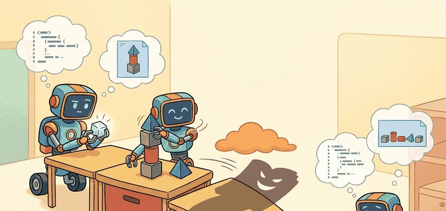
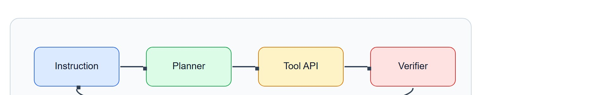
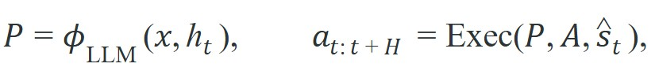

"When the planner writes code instead of text, the robot runs the plan instead of reading it. The compositionality is real; so is the gap between a correct sentence and a safe program."
A Policy Synthesizer With Commit Access

This section builds on the skill hierarchy introduced in section 26.1 and the compositional skill programs covered in section 26.5; familiarity with those concepts will make the API boundary discussion here clearer. The code-generation ideas extend directly into section 33.6, which covers tool-calling APIs that wrap the same pattern, and recur in Part IX alongside concrete manipulation pipelines in section 42.2.
Read the figure as a generated-code safety boundary. Code as Policies is valuable only when generated functions are sandboxed, typed, checked against robot APIs, and traced from natural-language intent to executable motion calls.

Depth and self-containment. This section must explain why generating code can be a better interface than generating free-text plans, and what extra safety and verification obligations that choice creates.
Production and evaluation contract. The key artifact is the generated program, the typed API surface it is allowed to call, the unit tests or runtime checks applied to it, and the execution result on the same episode.
For Code as Policies: LLMs that write robot code, name the language interface, grounded world state, executable action contract, and evidence artifact before trusting any claimed improvement.
For Code as Policies: LLMs that write robot code, write one evidence row recording instruction, world-state estimate, chosen action, verifier result, and failure label. Then identify which field would change first under command misunderstanding.
A researcher types "sort the red blocks by size and stack them left to right." Thirty seconds later, a robot arm is executing a loop. No hand-coded planner touched that command: an LLM read the instruction, wrote a short Python function that called the robot's pick-and-place API, and the function ran. That path from English sentence to physical motion is now real, and it changes what embodied AI can do. The catch is that the same speed that makes this thrilling makes it dangerous: a subtly wrong loop runs on hardware before anyone notices. This section shows how to draw the boundary that keeps code generation powerful without letting the robot hurt itself or its surroundings.
Give a language model write access to a robot's action API and it will happily emit a five-line loop that stacks blocks into a pyramid; the unsettling part is that the same five lines can drive an arm into the table before any human reads them, so the real question is not whether code generation works for embodied control but how narrow, typed, and testable the runtime interface must be to make it survivable.
The practical question is what kind of code the model should be allowed to write and how that code should be checked before touching the robot.
Generated code is powerful because it can bind perception, memory, and action in one program. It is dangerous for exactly the same reason.
Figure 33.3 names the four stages this theory has to account for: an instruction enters, a planner turns it into code, a tool API executes the calls, and a verifier feeds failure evidence back into the next decision. Keep that loop in mind as the formalism below makes each stage precise.
Instead of selecting one symbolic action, as an affordance-grounded planner does when it scores each next skill, the model emits a program $P$ over a robot API $\mathcal A$. The control loop becomes

where safety now depends on the allowed API, runtime guards, and verification suite as much as on the model's semantic quality.Code generation helps when tasks require loops, conditionals, and compositional reuse across subtasks. A free-text planner may say 'repeat until the drawer is closed'; a generated program can actually encode the loop condition. This is called the policy-as-program shift, and it changes what a planner can express. Liang et al. (2022) measured the gap on the same underlying model: on novel compositional instructions, code-based policies succeeded on roughly 90% of trials, while step-by-step text prompts succeeded on fewer than 50%. Counting the steps shows why the gap is so large. A flat text plan for a three-object sorting task must enumerate every conditional ("if the blue block is already placed, skip it") as a separate bullet, which typically produces 20 to 30 lines of instruction. The equivalent generated loop expresses the same logic in 5 to 8 lines, with no instructions duplicated across branches. The downside is that the model can also generate brittle logic or unsafe API sequences if the execution environment is too permissive.
Think of a flat action list as a paper grocery receipt: it names every item in order, but if the shelf for item three is empty, the receipt cannot tell you to skip it and try item four instead. A generated program is more like a recipe with a conditional step written in the margin: "if the tomatoes are unripe, use canned ones." The cook reads the contingency once, then acts on it every time the situation calls for it, without needing a human to rewrite the instructions mid-task. That capacity to branch on what is actually observed is exactly what the policy-as-program shift gives a robot controller.
This shift matters physically because a robot in the real world hits partial failures mid-task: a grasp slips, a detected object pose is stale, a conveyor is not yet clear. A flat list of actions cannot respond. It executes the next step regardless of outcome. A program can check a sensor return value, re-detect, and branch. Without that structure, a physical robot applies force to an already-placed object or repeats a motion that already failed, and the hardware and safety consequences are real.
The shift happens at the execution boundary. Given a typed API schema, the LLM writes a small function that calls those primitives directly instead of natural-language steps a separate parser must interpret. The runtime executes it, returns typed values, and the function's own control flow decides what happens next. The LLM writes once; the interpreter runs the result.
Those typed return values also close the loop back to sequential planning: a program's detect or pick call returns a status the LLM can branch on directly, so a code-as-policies controller can call into the same affordance-scored primitives that section 33.2's planner selects one at a time, just with the sequencing and error handling now expressed as code rather than re-planned by a separate module after every step.
A good mental model is constrained program synthesis. The LLM writes a small controller inside a sandbox, an isolated execution environment that restricts the program to a fixed set of allowed calls, rather than arbitrary Python with unrestricted side effects. The narrower the API and the clearer its contracts, the more useful and safer the generated code becomes.
Before reading the algorithm below, consider this: what exactly goes wrong when a generated program passes every whitelist check but still causes the robot to collide with the table? The answer shapes every design decision in the synthesis loop.
Input: natural-language instruction $x$, robot API $\mathcal{A}$ with typed signatures, LLM policy $\phi_\theta$, maximum repair attempts $K$, world-state estimate $\hat{s}_t$
Output: verified program $P^*$ and execution trace $\tau$, or failure report
So far: a generated program moves through a whitelist check (calls must lie inside the allowed API), a type-validation check (arguments must match the declared schema), and a sandbox execution check (the code must run against the current world-state estimate without runtime errors) before it earns the right to fail or retry; only after all three pass, or the repair budget is exhausted, does the loop reach a hardware-deployment decision.
A common assumption is that a generated program is safe to deploy once it passes syntax checks and whitelist validation. That assumption is wrong. Syntactic and API-boundary correctness says nothing about physical safety. A whitelisted sequence of valid calls can still apply force to an already-occupied gripper, command motion toward a human, or repeat a failed action indefinitely when the world state differs from what the model assumed. This mismatch between an assumed and an actual scene is the same failure that memory, state tracking, and hallucination in physical tasks address in depth. Static and type-level checks are a necessary first filter, not a safety certificate. Physical safety also requires runtime simulation against the actual scene state, termination guarantees, and hardware-level collision checking through a planner such as MoveIt 2, a widely used open-source motion-planning framework for robot arms, that runs independently of the generated code.
Trace the synthesis loop for the instruction "put the red mug on the tray" with API $\mathcal{A} = \{\texttt{detect}, \texttt{pick}, \texttt{place}, \texttt{wait}\}$ and repair budget $K = 2$.
pick(obj: str, grasp_width_m: float). Injected into the prompt with $x$.detect("red mug"); pick("red mug"); drop("tray"). Counter $k = 0$.detect("red mug"); pick("red mug"); place("tray").pick is missing grasp_width_m, so $E_\text{type} = \{\texttt{"pick missing grasp\_width\_m"}\}$.detect("red mug"); pick("red mug", 0.04); place("tray").Code Fragment 1 generates a tiny skill program over a restricted API and then validates that every called function is allowed. It makes the interface boundary concrete rather than celebrating raw text generation.
# Validate that generated code calls only approved robot API functions.
# Program generation is useful only when the execution surface is constrained.
# A whitelist is the smallest possible runtime guard.
generated_calls = ["detect('red_mug')", "pick('red_mug')", "place('tray')"]
allowed = {"detect", "pick", "place", "wait"}
safe = all(call.split("(")[0] in allowed for call in generated_calls)
print({"calls": generated_calls, "safe": safe})The expected output is a generated micro-program whose every call lies inside the approved API surface. The key fact is not only that `safe` is `True`, but that the plan has already been reduced to inspectable calls such as `detect`, `pick`, and `place`, which makes downstream verification possible.
detect, pick, place) against the allowed API set and prints a boolean safety verdict; it shows the minimum discipline required before any generated program is trusted with hardware.When you define the robot API the LLM is allowed to call, declare every function's arguments as a pydantic.BaseModel and pass the model's JSON schema directly into the system prompt. This means the LLM sees the exact field names, types, and required flags before it writes a single line, so argument-order errors and missing required parameters are caught by Pydantic validation before any whitelist check runs. For example, if pick(obj: str, grasp_width_m: float) is your primitive, the schema makes it impossible for the model to silently transpose the arguments or omit grasp_width_m. Regenerating the schema from the same Pydantic models you use at runtime also guarantees the prompt and the execution surface stay in sync as the API evolves.
Program-of-thought runtimes, sandboxed Python interpreters, and tool-calling APIs can wrap the same pattern in a few lines. They remove the string plumbing and schema parsing, but they do not remove the need for runtime guards, unit tests, and state-based verification.
detect(obj: str) -> Pose3D, pick(obj: str, grasp_width_m: float), place(target: str), push(obj: str, direction: Vec3, distance_m: float), and a small set of state queries. Anything beyond that surface area, including raw joint-angle commands or direct Cartesian velocity writes, should be inaccessible to the LLM entirely.ros2 topic pub calls or writing to the joint-velocity controller directly, both of which bypass MoveIt 2 collision checking and, in practice, are the kind of unguarded call that has been reported to cause hardware damage in research deployments when a sandbox was not enforced.The most common mistake is to let the generated code touch too much of the runtime surface. The model does not need file system access, shell access, or arbitrary network calls to solve a tabletop manipulation task.
A generated policy may combine `detect`, `pick`, and `place` with a retry loop that re-detects after slippage in a pick-and-place pipeline. That compositional pattern is much easier to express in code than as a list of flat symbolic actions, but only if the allowed functions are clean and testable.
Google DeepMind's original Code as Policies system drove a real UR5e arm: a user could say "stack the blocks in a pyramid" and the LLM wrote the nested pick-and-place loop on the fly, no per-task programming required. The same pattern now underpins Figure-style and Physical Intelligence demos where a spoken instruction is compiled into an executable skill program against a fixed manipulation API, with collision checking handled separately by a motion planner.
Free-text plans make optimistic promises. Generated code makes those promises executable, which is either progress or a very efficient way to meet your safety team.
Verified code synthesis with formal contracts (2024-2025). Rather than checking generated code with runtime whitelists alone, recent work couples LLM synthesis with lightweight formal methods. RoboScript (Hua et al., 2024, Stanford) generates code accompanied by precondition and postcondition annotations derived from the API schema, then uses a symbolic executor to check those contracts against the scene state before hardware deployment. This closes the gap between passing a whitelist and actually satisfying safety properties.
Self-repairing code agents with execution feedback (2024-2025). OpenAI and DeepMind have both released agent frameworks (GPT-4o tool-call loops and Gemini Robotics, respectively) in which generated robot programs are revised by the same model that wrote them, using structured execution traces as feedback. Unlike the one-shot repair studied in Liang et al. (2022), these agents run multi-turn repair chains that converge in three to five cycles on tasks with up to twelve subtasks, enabling policies that recover from mid-task perception failures without human intervention.
Multimodal grounding for generated API arguments (2025-2026). A persistent weakness of pure-text code generation is that object names in generated calls must be resolved to real scene instances. Work from Physical Intelligence (Pi) and from MIT CSAIL on grounded code generation passes vision-language embeddings directly into the code context so that generated calls such as pick("mug") are resolved against a live object detector rather than a fixed name registry. This makes code-as-policies pipelines robust to novel object configurations without requiring a separate perception preprocessing step.
Open problem for PhD students. Existing repair loops feed error messages back as text, but the LLM cannot observe the partial physical state after an aborted execution: it receives a string such as "place() failed: gripper empty" without knowing where the arm stopped or what the scene looks like. A tractable open problem is designing a compact state-delta representation that can be injected alongside the error message so that the repair generation is conditioned on the true post-failure scene, not just on the error label. The challenge is that this representation must be small enough to fit in the model's context window while being informative enough to distinguish, for example, a slip failure from an incorrect grasp-width argument.
If your model generated a loop or conditional, could you explain which runtime guard proves that the code will terminate or fail safely under missing detections?
Code generation changes the abstraction level of planning. Instead of choosing the next action only, the model can synthesize local control flow and data flow. That is why program-based interfaces often generalize better than step-wise prompts on long tasks with repeated patterns.
The cost is that verification must move closer to software engineering. You need typed signatures, unit tests, API whitelists, and runtime contracts, not just high-level task metrics. A generated program is a real artifact, and it deserves real software scrutiny before it reaches hardware.
| Tool or Library | Role in the Topic | Builder Advice |
|---|---|---|
| Sandboxed Python or a DSL | Generated control logic surface. | Use it when free-form text is too weak but unrestricted code is too risky. |
| Pydantic or JSON schema | Validation of generated arguments. | Use it when the generated program must pass typed objects to robot APIs. |
| ROS 2 actions | Execution target for generated procedures. | Use actions when generated code should call long-running, feedback-rich skills. |
| MoveIt 2 | Safe motion-planning backend. | Use it when generated code specifies high-level manipulation goals rather than trajectories. |
| Unit tests and replay harnesses | Program verification before execution. | Use them to catch invalid calls or wrong control flow before the robot moves. |
Choosing those tools is only half the discipline; the other half is recording what each generated program did so the choices can be evaluated. Code Fragment 2 stores the generated program and its verifier result in one record. That is the right unit for ablations because it lets you compare program quality, execution success, and repair frequency together.
# Store the generated program and verifier result as one experiment record.
# Keeping only a task-success bit loses the information needed to diagnose
# argument errors, loop-termination bugs, and API misuse.
import json, pathlib, datetime
def save_execution_record(
instruction: str,
program_text: str,
api_schema: dict,
verifier_errors: list,
execution_trace: list,
task_success: bool,
output_dir: str = "experiment_records",
) -> pathlib.Path:
record = {
"timestamp": datetime.datetime.utcnow().isoformat(),
"instruction": instruction,
"program_text": program_text,
"api_schema_keys": list(api_schema.keys()),
"verifier_errors": verifier_errors,
"execution_trace": execution_trace,
"task_success": task_success,
}
out = pathlib.Path(output_dir)
out.mkdir(parents=True, exist_ok=True)
path = out / f"record_{record['timestamp'].replace(':', '-')}.json"
path.write_text(json.dumps(record, indent=2))
return path
# Example call
path = save_execution_record(
instruction="Sort red blocks by size and stack left to right.",
program_text="for obj in detect_all('red_block'): pick(obj); place('stack')",
api_schema={"detect_all": "str -> list[str]", "pick": "str -> None", "place": "str -> None"},
verifier_errors=[],
execution_trace=["pick(block_s)", "place('stack')", "pick(block_m)", "place('stack')"],
task_success=True,
)
print(f"Record saved to {path}")The expected output is an execution record that ties the literal generated program to the verifier outcome and the observed execution result. That linkage matters because code-generating agents often fail through argument misuse or illegal call order, and those errors are invisible if you keep only a task-success bit.
save_execution_record, writes the instruction, program text, API schema keys, verifier errors, execution trace, and success flag to a timestamped JSON file, giving each run a single auditable artifact instead of a bare pass or fail bit.Once that record exists, it becomes the lens for reading failures, because it lets you sort what went wrong into two very different bins. When code-based planners fail, separate semantic plan errors from software-interface errors. The model may understand the task but still misuse an argument order, forget a termination condition, or violate a runtime precondition.
A representative failure class is off-by-one loop termination. Consider a generated program that calls detect('mug') inside a while not_placed loop but never updates the not_placed flag after a successful place() call. The robot replaces the mug indefinitely, and task-success metrics recorded only as a binary label give no signal that the error was a missing flag assignment rather than a perception failure. Storing the full generated program text alongside the verifier trace makes this class of bug recoverable in seconds; discarding the program text and keeping only the success bit makes it nearly invisible.
Generated code is a strong embodied-planning interface only when the API surface is narrow, typed, and aggressively verified.
A program that passes every whitelist check but has no termination guarantee is not a policy: it is a loop waiting for a deadline to miss.
Design a five-function robot DSL for a tabletop domain and explain why each function belongs in the allowed set. Then list two functions that should remain unavailable to the LLM and why.
Beginner (weekend): GPT-generated pick-and-place in PyBullet. Build a tabletop environment in PyBullet with three to five objects and write a four-function Python API (detect, pick, place, query_pose); prompt a Claude or GPT model to generate a sorting program over that API and run it in simulation. The key challenge is writing an API narrow enough that the model cannot produce unsafe call sequences while still expressing useful conditional logic.
Intermediate (one to two weeks): Code-as-Policies repair loop on a LeRobot simulation. Use the LeRobot framework with a simulated SO-100 arm to build a constrained code-generation loop: the LLM writes a skill program, Pydantic validates arguments, a MuJoCo or Gymnasium simulator executes it, and any runtime error is fed back for one repair attempt before logging the result. The key challenge is wiring the verifier error messages back into the LLM context in a way that produces convergent repairs rather than repeated mistakes.
Advanced (two to four weeks): ROS 2 action server as an LLM-callable API. Expose a set of ROS 2 action servers (navigate, grasp, inspect) as JSON-schema-documented tools, use a language model to generate action-call sequences from natural-language instructions, validate each call with a MoveIt 2 collision check before execution, and log the generated program alongside the verifier trace for each episode. The key challenge is maintaining schema synchrony between the ROS 2 action definitions and the JSON schema injected into the model prompt as the API evolves.
Goal. Empirically measure how often an LLM-generated robot program needs at least one repair cycle, and how a narrow API changes that rate.
Tools needed. Python with pybullet (the bundled kuka_iiwa or a panda URDF), pydantic for typed signatures, Python's built-in ast module for the whitelist check, and an LLM API client (Claude or GPT). Budget 15 to 30 minutes.
Procedure. Define a four-function API (detect, pick, place, query_pose) as Pydantic models, dump their JSON schema into the system prompt, and ask the model to write a sorting program for three coloured blocks. Parse the returned code with ast.walk, reject any call whose name is outside the whitelist, validate arguments against the Pydantic schema, then execute the accepted calls in PyBullet.
What to vary. (1) The API breadth: run once with the four-function surface, then again after adding a tempting but unsafe set_joint_velocity primitive. (2) The repair budget $K \in \{0, 1, 3\}$. (3) The prompt: with versus without the injected JSON schema.
What to observe. Count the fraction of first-pass generations that fail the whitelist or type check (expect roughly a third to fail at least once, matching Liang et al. 2022), how many succeed within $K$ repairs, and how often the model reaches for the unsafe primitive once it is exposed. Note that removing the schema from the prompt sharply increases argument-order and missing-parameter errors.
Liang et al. (2022). "Code as Policies: Language Model Programs for Embodied Control." arXiv.
This is the primary reference for using LLM-generated programs as embodied-control policies.
ROS 2 Documentation. 'Creating an action.'
ROS 2 actions are a practical target interface for generated high-level code in robot systems.
BehaviorTree.CPP Documentation. 'Integration with ROS2.'
Behavior trees are a strong comparison point when deciding whether generated code or explicit execution graphs are the better abstraction.